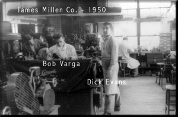
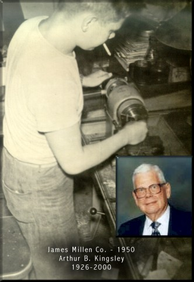

|
The pictures below were provided by Scott Kingsley, WB1F, and
were the property of his late father Arthur B. Kingsley, N1FAS.
Art worked both at Millen and previously for National just as
James Millen himself. These are from the Millen Factory at 150
Exchange Street in Malden, Massachusetts.

Scott
was quite young at the time his father worked at Millen and was
not able to provide any more detail of the people in the left
side picture. If any readers of this page have more information
or additional pictures please contact the JMS for their inclusion.

|